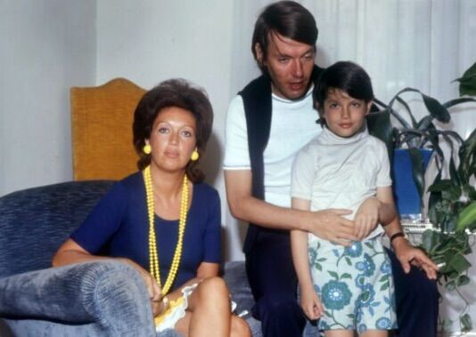

Fabrizio de Andrè
Fabrizio de André nasce a Genova Pegli il 18 febbraio 1940, da Giuseppe de André e Luisa Amerio. Durante la guerra la famiglia di de andrè si trasferisce alla Cascina dell’Orto di Revignano d’Asti per rientrare definitivamente a genova una volta terminato il conflitto mondiale. Dopo aver frequentato prima lettere e poi Medicina, Fabrizio si iscrive a Giurisprudenza, che poi lascerà a sei esami dalla laurea.
Il 29 luglio del 1962 sposa Enrica Rignon, detta puny, con cui lo stesso anno farà un figlio, Cristiano.
Enrica Rignon, Fabrizio de Andrè, Cristiano
Nel marzo del 1974 Fabrizio conosce Dori Ghezzi per poi acquistare con lei la tenuta L’Agnata in Sardegna,nel cuore delle gallura. Il 27 Agosto del 1979 Fabrizio e Dori vengono rapiti. Dori sarà liberata il 20 dicembre e Fabrizio il giorno successivo. Nel dicembre del 1989 Fabrizio e Dori si sposano nel municipio di tempio pausania,
seconda moglie Fabrizio De Andrè
La canzone di Marinella Il pescatore Via del Campo Bocca di rosa Crêuza de mä La guerra di Piero Amore che vieni amore che vai Dolcenera Amico fragile Don Raffaè